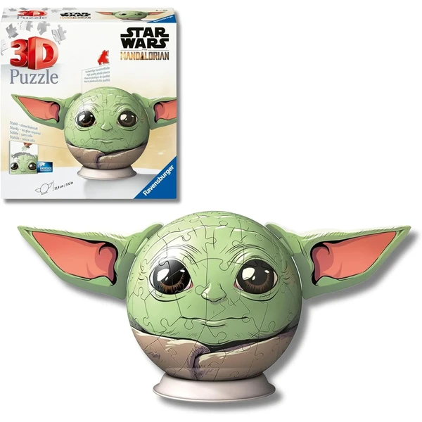
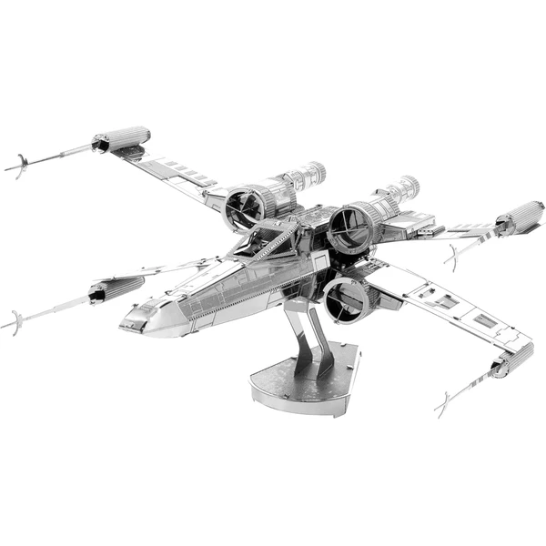

✨ Guía especial
Puzzle 3D de Star Wars: Yoda, naves y los mejores modelos
Yoda, la línea metálica Piececool y qué marca elegir
Yoda, la línea metálica Piececool y qué marca elegir
Star Wars es una de las licencias más populares dentro del catálogo de puzzles 3D, con un matiz interesante frente a otras franquicias: además de los modelos estándar, tiene una línea propia de puzzles metálicos de alta dificultad. En esta guía repasamos el modelo más popular, Yoda, la línea metálica de Piececool, y qué marca elegir según lo que busques.
Yoda es el personaje individual más popular dentro de la licencia Star Wars en formato 3D. Suele fabricarse como figura compacta, con pocas piezas y un diseño pensado para que el resultado final se sostenga en pie sobre una base — un formato muy habitual en figuras de personaje, distinto de las réplicas de naves o vehículos que vimos en otras categorías.

Yoda Ver en Amazon →Dentro de la licencia Star Wars existe una línea específica de puzzles metálicos, con Piececool como marca de referencia. A diferencia de los modelos estándar de espuma rígida o madera, aquí las piezas son de metal troquelado, mucho más pequeñas y minuciosas — un formato claramente orientado a un público adulto con paciencia y experiencia previa en este tipo de montaje, no apto como primer puzzle 3D para un niño.

X-Wing Ver en Amazon →Dentro de Star Wars, la elección de marca depende sobre todo del perfil de quien vaya a montarlo. Ravensburger ofrece los modelos estándar más accesibles, con piezas más grandes y un montaje más rápido — la opción más segura si el regalo es para un niño o alguien sin experiencia previa. Piececool, con su línea metálica, apunta al extremo opuesto: mayor dificultad, piezas diminutas y un resultado final más detallado, pensado para quien ya disfruta del reto de montar puzzles 3D complejos.
Tanto los modelos estándar de Ravensburger como la línea metálica de Piececool se encuentran principalmente en Amazon, donde hay más variedad de personajes y formatos disponibles que en tienda física.
Yoda, con diferencia — es el modelo individual más popular dentro de la licencia.
El estándar (Ravensburger) usa piezas más grandes de espuma rígida o madera, fácil de montar. El metálico (Piececool) usa piezas de metal troquelado, mucho más pequeñas y detalladas, pensado para un público adulto con experiencia.
No especialmente — requieren precisión y paciencia por el tamaño reducido de las piezas. Para un niño es preferible un modelo estándar de mayor tamaño de pieza.
Principalmente en Amazon, con más variedad de personajes y formatos que en tienda física.
Todos los tipos, materiales, marcas y modelos según la edad.